Bienvenue
Bienvenue à la Bastide du Bonrepos ! Merci d'avoir choisi notre domaine. Nous avons pensé à chaque détail pour que votre séjour se déroule dans les meilleures conditions et que vous repartiez avec de merveilleux souvenirs.
Ce livret rassemble toutes les informations utiles : fonctionnement du domaine, consignes, bonnes adresses et partenaires. En cas de besoin, n'hésitez pas à nous contacter. Le bouton Sommaire, en haut à droite, vous emmène directement à chaque rubrique.
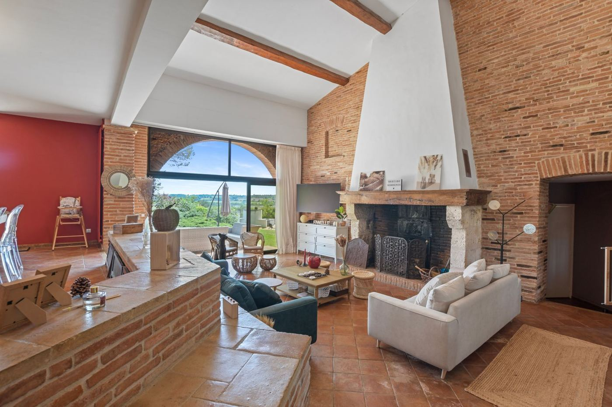
De la Bastide
Amoureux de la brique toulousaine et de la Ville rose, Jere Bos s'est toujours imaginé investir dans une propriété de caractère, à la fois proche de la ville et chargée d'histoire. Passionné de sport depuis tout petit, il rêvait aussi d'un lieu où l'on puisse bouger, partager et se retrouver.
Attentif aux opportunités, il découvre cette bâtisse quatre jours seulement après la parution de l'annonce. D'abord peu convaincu, il décide malgré tout de la visiter, par curiosité et parce que chaque expérience peut s'avérer enrichissante.
Ce qui devait être une simple visite devient une évidence. Plus qu'un bien, la Bastide était chargée de souvenirs, et ses anciens propriétaires l'ont profondément marqué :
« Les personnes âgées possèdent une richesse inestimable de savoir et d'expériences. La dame qui vivait ici me rappelait mon arrière-grand-mère, ce qui a sans doute renforcé mon attachement immédiat à cette maison. »
Porté par son ambition, il engage rapidement les démarches. Face à d'autres acquéreurs, son projet est retenu. Chez le notaire, il ressent un mélange d'excitation et d'affection pour les anciens propriétaires, qui laissent derrière eux vingt ans de vie. À la sortie du rendez-vous, son premier réflexe est de se rendre sur place. Dans la Bastide vide de tout meuble, un sursaut de lucidité le gagne :
« C'était désormais à moi de piloter ce projet… Je me sentais tout petit face à l'ampleur de la tâche. »
Conscient des défis, il s'entoure des bonnes personnes pour redonner vie au lieu. Après des mois de rénovations et d'aménagements, l'objectif est clair : faire de la Bastide un véritable havre de paix pour les voyageurs.
2025 marque un tournant avec l'ouverture officielle de la Bastide en location courte durée. Aujourd'hui, elle conjugue l'élégance et le charme authentique d'un ancien corps de ferme avec le confort contemporain, entre Toulouse et Albi, au cœur du Triangle du Pastel.
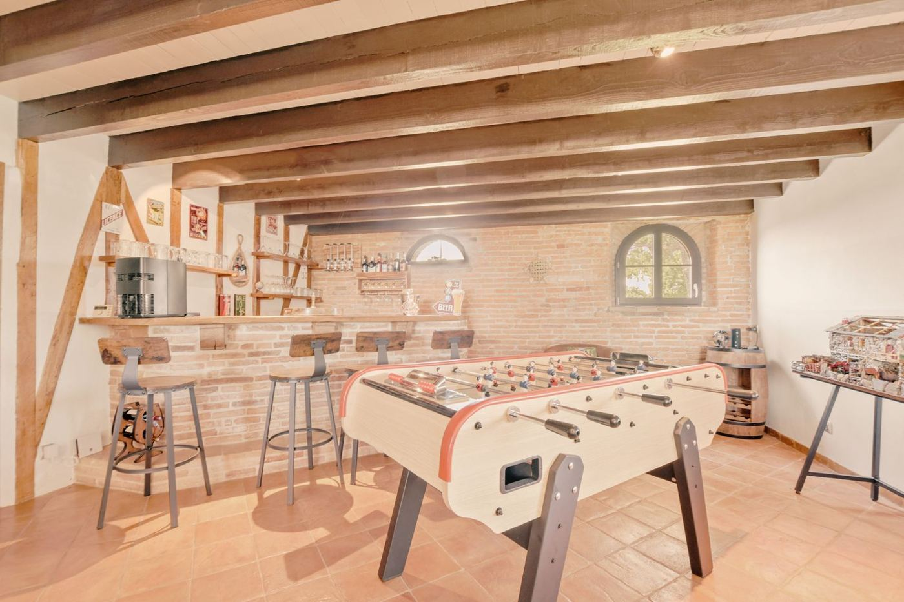
Votre hôte
Nous mettons un point d'honneur à vous offrir un séjour agréable et sans souci. Notre objectif : que vous vous sentiez comme chez vous.
Domaine
Tombés sous le charme de cette magnifique Bastide, nous l'avons rénovée avec soin pour vous offrir un lieu d'exception. Petite anecdote : elle a appartenu à un célèbre astronaute français.
Au cœur d'un ancien corps de ferme rénové, le domaine offre une vue panoramique imprenable sur les Pyrénées. Situé à Bonrepos-Riquet, entre Toulouse et Albi, il promet un séjour inoubliable dans un cadre naturel.
Cuisinière SMEG, sauna, jacuzzi, piscine et terrains de sport : le lieu idéal pour vos vacances comme pour vos événements — mariages, anniversaires, séminaires ou repas d'entreprise.
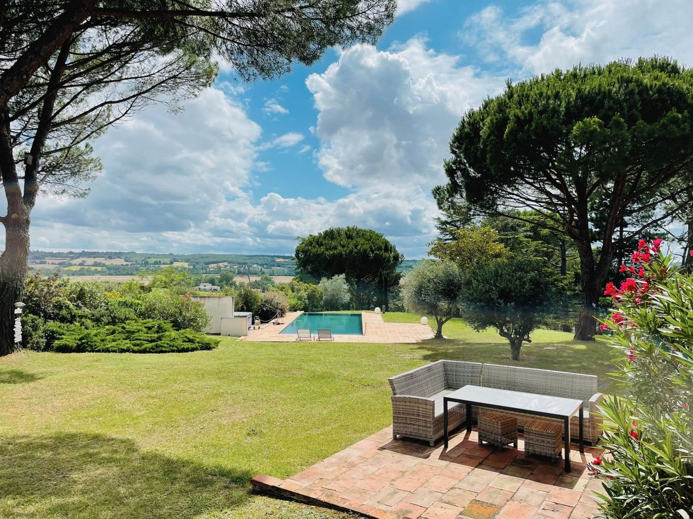
Arrivée & départ
L'accueil se fait à partir de 17h, afin de nous laisser le temps de préparer la Bastide. Le check-in se fait en personne : nous vous accueillons et vous faisons visiter le domaine.
Le check-out doit être effectué au plus tard à 11h, pour préparer la Bastide pour les voyageurs suivants. Il se fait aussi en personne, pour l'état des lieux de sortie.
Arrivée anticipée : possible dès 13h. Départ tardif : possible jusqu'à 14h. Sous réserve de disponibilité et moyennant un supplément. Contactez-nous à l'avance pour en faire la demande.
Faire la demandeWi-Fi
L'intérieur
Dès votre arrivée, laissez-vous séduire par l'authenticité et le confort de cet ancien corps de ferme rénové avec soin, qui allie élégance et fonctionnalité.
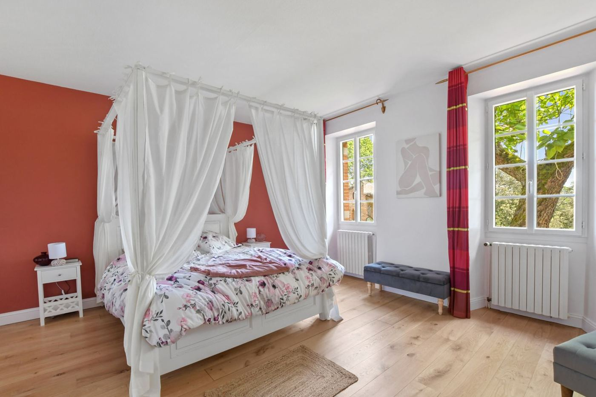
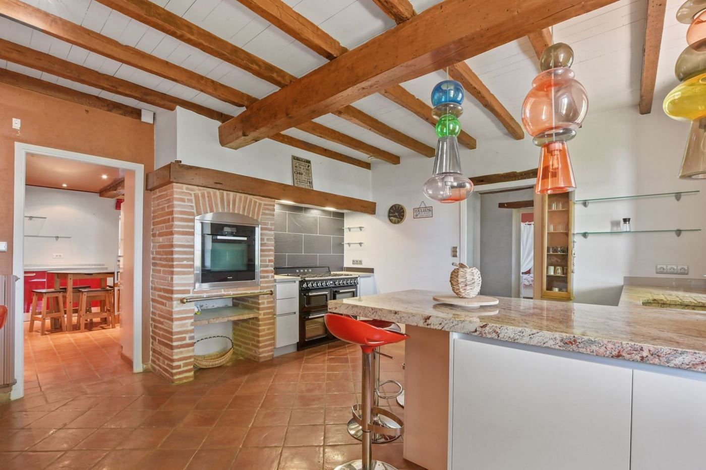
Espaces nuit & salles de bain
- 9 chambres décorées avec soin : 6 chambres doubles avec literie premium, 3 chambres enfants avec plusieurs lits simples
- 5 salles de bain modernes et spacieuses : 3 privatives dans les chambres doubles, 2 partagées
- 5 WC
Cuisine entièrement équipée
- Cuisinière SMEG, four, plaque de cuisson, micro-ondes
- Grand réfrigérateur, congélateur, lave-vaisselle
- Grille-pain, bouilloire, cafetière et ustensiles
- Arrière-cuisine et buanderie avec lave-linge et sèche-linge
Espaces de vie
- Un grand salon convivial
- Une salle à manger spacieuse
- Un bar avec baby-foot
- Une mezzanine détente : coin lecture et jeux de société
- Un espace bureau pour travailler au calme
Confort toute l'année
Le chauffage est régulé automatiquement en hiver. En été, grâce à l'excellente isolation et aux épais murs de brique, la Bastide conserve une fraîcheur naturelle.
Intérieur
Pour votre confort et la préservation de ce lieu unique, merci de respecter les consignes suivantes.
- Non-fumeur. Il est interdit de fumer à l'intérieur de la Bastide. Merci de fumer uniquement à l'extérieur et d'utiliser les cendriers prévus à cet effet.
- Grande cheminée. Le foyer ouvert est uniquement décoratif et ne doit en aucun cas être utilisé.
- Muret entre salle à manger et salon. Il peut servir d'assise, mais il est déconseillé d'y marcher et interdit de sauter dessus, pour votre sécurité.
- Décoration et mobilier. Certaines pièces sont uniques et réalisées par des artistes locaux. Merci d'en prendre soin et de ne pas déplacer les meubles.
- Cuisinière à gaz. Veillez à bien l'éteindre après chaque utilisation.
- Propreté et rangement. Merci de laisser les lieux aussi propres et ordonnés que possible.
Cuisine
- Utilisez les planches à découper fournies : ne coupez pas directement sur les plans de travail.
- Rincez votre vaisselle après utilisation.
- Des sacs-poubelle sont disponibles sous l'évier.
- Éloignez tout ce qui pourrait prendre feu des sources de chaleur.
- Essuyez les plans de travail avant votre départ.
- Quelque chose est cassé ou ne fonctionne pas ? Cela peut arriver : prévenez-nous simplement.
Profitez de la cuisine !
Linge
Tout le linge de maison est fourni pendant votre séjour :
- Linge de lit : les lits sont faits à votre arrivée.
- Serviettes de toilette : une par personne. Besoin de plus ? Contactez-nous.
L'extérieur
Un véritable écrin de verdure, avec une vue panoramique à 360° sur les Pyrénées.
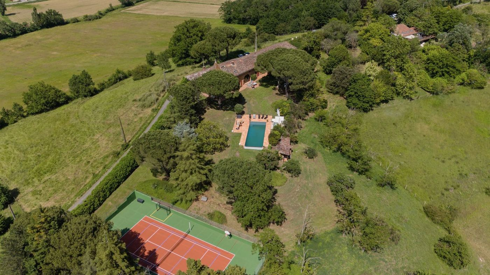
Loisirs & bien-être
- Piscine privée
- Jacuzzi en plein air
- Sauna extérieur
- Terrains de sport : tennis, basket, foot, volley, handball
- Mini-forêt ombragée pour balades et pique-niques
- Espace guinguette et terrasse avec grande table
- Barbecue et plancha
Pratique & sécurité
- Cour intérieure privative pour stationner
- Borne de recharge pour véhicules électriques
- Système de sécurité avec alarme
Matériel de sport fourni
4 raquettes de tennis, balles et lance-balles · 4 raquettes de badminton et volants · ballons de handball, basket, volley et foot · skateboard et diabolo · souffleur de feuilles sur batterie.
Extérieur
Pour que chacun profite des extérieurs tout en préservant le domaine et l'environnement :
- Mégots. Ne jetez pas vos mégots au sol (jardin, terrasse, abords) : des cendriers sont à votre disposition.
- Plancha à gaz. Fermez bien la bouteille de gaz après chaque utilisation.
- Barbecue au feu de bois. Gardez toujours de l'eau à portée de main pendant son utilisation.
- Piscine. Bâchez-la après chaque baignade pour préserver la température et la propreté de l'eau. La baignade des enfants se fait sous l'entière responsabilité des adultes.
- Mare à poissons. Elle est sécurisée : il est interdit d'enjamber la clôture.
- Enfants. Ils restent sous l'entière responsabilité de leurs parents dans tous les espaces extérieurs, notamment autour de la piscine, du jacuzzi et des terrains de jeu.
- Sauna & jacuzzi. Merci de respecter leurs consignes d'utilisation. Le sauna est réservé aux adultes.
- Éclairage. Éteignez les lumières extérieures chaque soir pour limiter la pollution lumineuse.
- Mobilier et équipements. Respectez le mobilier de jardin et les installations (terrasse, transats, filets…) et rangez-les après utilisation.
- Terrain multisport. Accès libre : merci de prendre soin du matériel mis à disposition.
À savoir
Équipements à disposition
- Confort : 2 sèche-cheveux, fer et table à repasser
- Détente : cave à vin (18 bouteilles) et station de musique
- Divertissement : Wi-Fi gratuit, jeux de société (Scrabble, Uno, Cluedo), livres pour tous les âges
- Bébé : chaise haute, lit parapluie, baignoire, barrière de sécurité, transat bébé
Consignes sauna
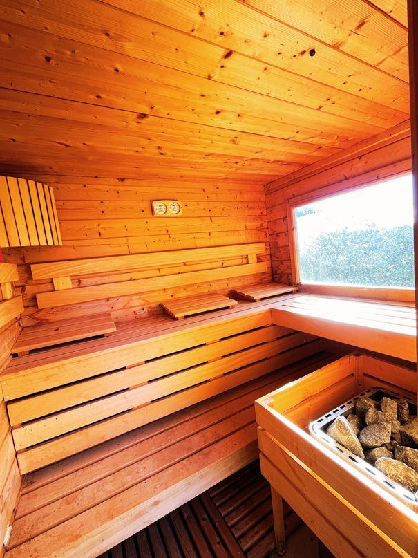
- 1515 minutes maximum par cycle.
- 18Interdit aux mineurs.
- !Interdit aux femmes enceintes et aux personnes souffrant de problèmes cardiovasculaires ou respiratoires.
- ✕Ni tabac, ni alcool à l'intérieur du sauna.
- ⏻Éteignez le sauna après chaque utilisation.
Conseil : hydratez-vous avant et après la séance, et sortez immédiatement en cas de malaise.
Consignes jacuzzi
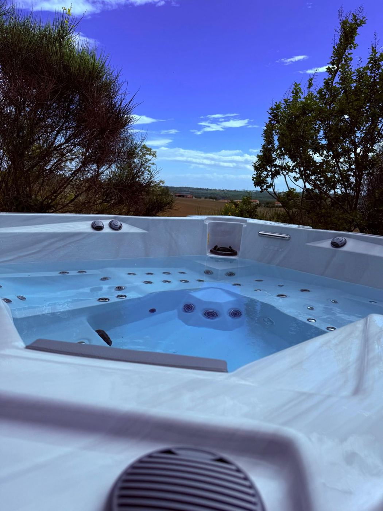
- 2015 à 20 minutes de bain recommandées, pour éviter tout risque de malaise.
- !Interdit aux enfants non accompagnés. Il est conseillé d'être au moins deux.
- ✕Ne pas sauter, plonger ni s'asseoir sur les rebords.
- ✕Ne rien verser dans l'eau (aucun produit). Interdit de fumer, de manger et de boire de l'alcool dans le jacuzzi.
- ⏻Après chaque utilisation : éteignez, baissez la température et refermez la couverture pour conserver la chaleur et protéger l'eau.
Le Nid de la Bastide
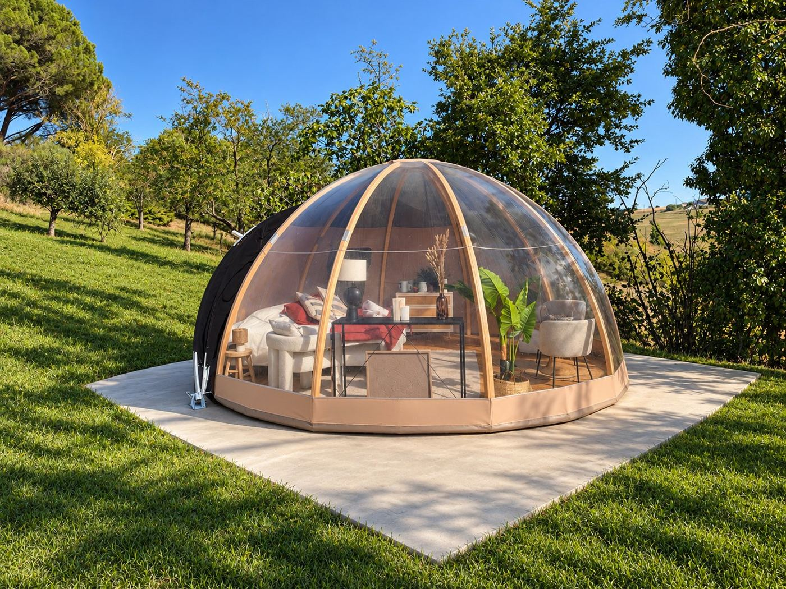
Envie d'une nuit sous les étoiles ? Une bulle installée au cœur du domaine, face à la nature, avec une vue dégagée sur la campagne et les Pyrénées.
La bulle
- Pour 2 personnes
- Un lit double avec literie de qualité
- Vue sur les Pyrénées
- Climatisation et chauffage
- Douche extérieure avec eau chaude
- WC extérieurs privatifs
- Linge de lit et serviettes fournis
- Café, thé et sucre à disposition
Comment en profiter ?
La bulle peut être ajoutée à votre séjour en supplément : idéale pour un couple, des jeunes mariés ou une surprise d'anniversaire.
Réserver · 06 85 21 35 18
Règles
Prenez soin de la maison et des extérieurs en évitant toute dégradation.
Nous adorons les animaux ! Ils sont acceptés sur demande préalable, avec supplément.
Il est strictement interdit de fumer à l'intérieur de la Bastide.
Pas de grande fête sans accord préalable. Merci de limiter le bruit après 22h.
Aucun voyageur supplémentaire n'est accepté sans nous en avoir informés au préalable.
Respectez les règles de sécurité et n'utilisez pas d'appareil électrique dangereux.
Autour de la Bastide
Parc aventure en forêt, avec des parcours dans les arbres pour petits et grands.
Affrontez vos amis sur des terrains aménagés en pleine nature.
Une aventure immersive en pleine nature, entre amis ou en famille.
Balades ou cours d'équitation dans un cadre apaisant, pour tous les niveaux.
Un parcours ludique et accessible à tous, en famille ou entre amis.
Du football dans une bulle gonflable : fous rires assurés !
Sentiers de randonnée paisibles avec de superbes vues sur le lac.
Le château de Pierre-Paul Riquet, créateur du canal du Midi, et sa Grotte de la Fraîcheur.
Restaurants
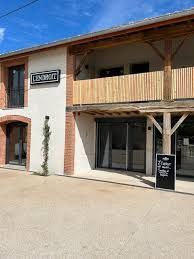
Plats faits maison et ambiance conviviale, à deux pas de la Bastide. Voir l'offre
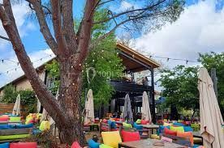
Restaurant guinguette pour partager de bons moments en famille ou entre amis. Voir l'offre
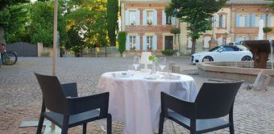
Restaurant gastronomique étoilé : cuisine raffinée et créative dans un cadre chaleureux.
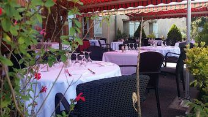
Cuisine traditionnelle française à base de produits frais et de saison. Le chef Éric Puel et son équipe vous accueillent pour une expérience authentique.
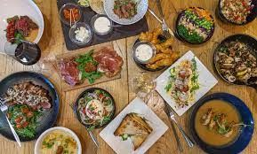
Bistrot chaleureux, cuisine française raffinée de produits frais et de saison, belle carte des vins.
Visiter Toulouse
À environ 25 minutes de la Bastide.
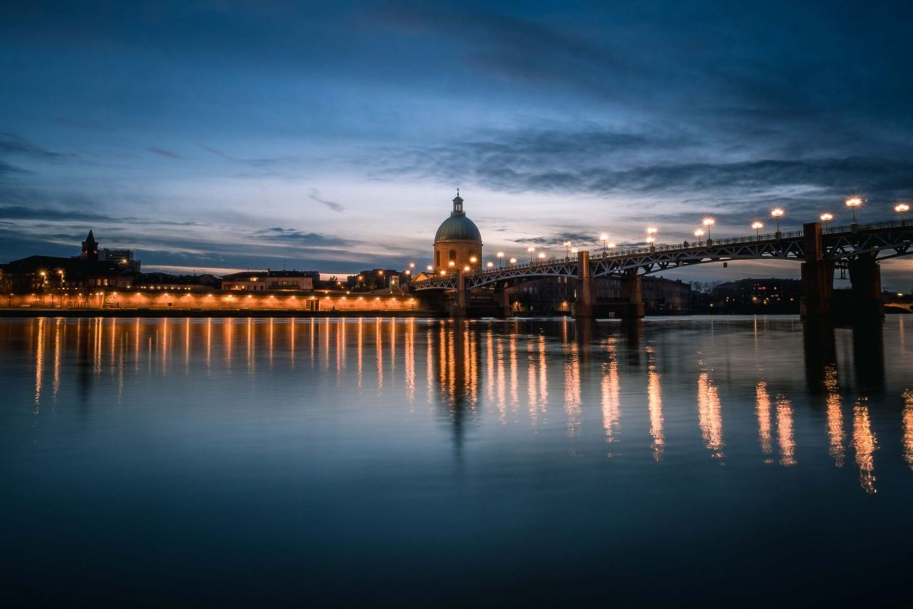
Le cœur de Toulouse : hôtel de ville et théâtre du Capitole, entourés de cafés et de restaurants.
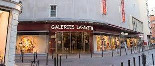
Le temple du shopping toulousain, en plein centre-ville.
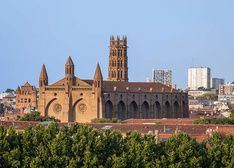
Église gothique célèbre pour son « palmier » de pierre.
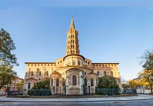
Chef-d'œuvre de l'art roman, classé au patrimoine mondial de l'UNESCO.
Fontaines illuminées et ambiance animée, surtout en soirée.
Le paradis des gourmands : produits frais et régionaux, restaurants à l'étage.
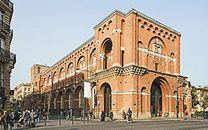
Le musée des beaux-arts, dans un magnifique ancien couvent.
Un grand parc en ville, idéal pour une pause nature.
Toulouse au fil de l'eau
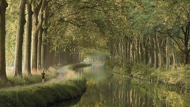
Classé au patrimoine mondial de l'UNESCO, parfait pour une balade à pied ou à vélo.
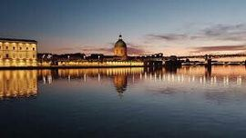
Promenade au bord de la Garonne, idéale au coucher du soleil.
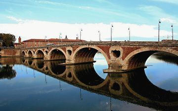
Le plus ancien pont de Toulouse, avec une superbe vue sur la Garonne.
Un jardin zen inspiré des paysages traditionnels japonais.
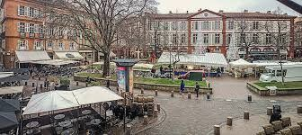
Charmante place entourée de cafés et de boutiques.
Machines géantes animées, spectacles et démonstrations.
Toulouse autrement
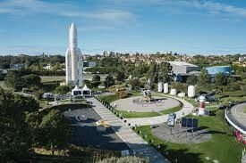
Un parc dédié à l'exploration spatiale, avec expositions et simulateurs.
L'univers de l'aéronautique et des avions mythiques comme le Concorde.
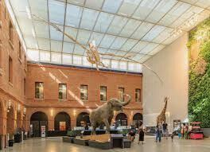
Un musée d'histoire naturelle fascinant sur la biodiversité et les sciences de la vie.
Surnommé le « Petit Wembley », c'est le plus grand stade de la ville. Sur l'île du Ramier, il accueille le Toulouse Football Club (TFC) et de grandes rencontres internationales.
Le temple du Stade Toulousain, l'un des clubs de rugby les plus titrés d'Europe. Assister à un match des Rouge et Noir, c'est vivre la ferveur toulousaine !
Bars & sorties
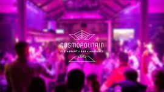
Bar à cocktails tendance, ambiance chic et feutrée : idéal pour un afterwork ou une soirée entre amis.
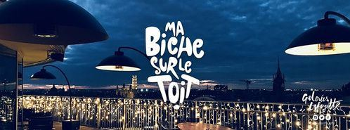
Sur le toit des Galeries Lafayette : vue imprenable, cuisine moderne et cocktails.
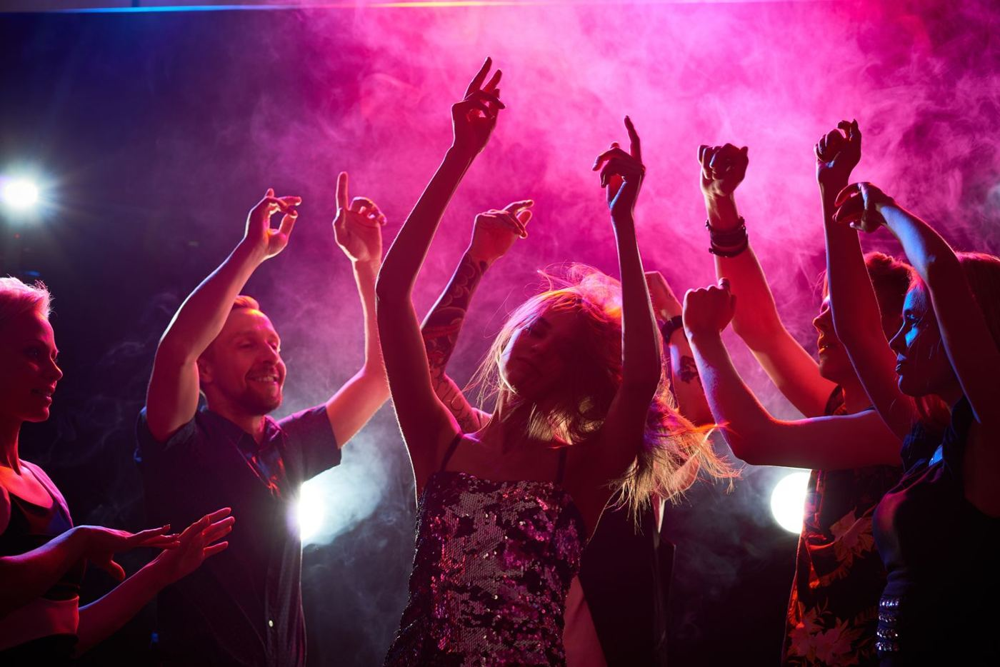
Boîte de nuit mythique de Toulouse : électro, house et hip-hop jusqu'au bout de la nuit.
Discothèque à L'Union, pour prolonger la soirée sur le dancefloor.
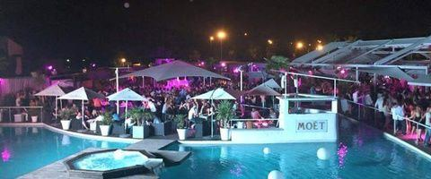
Restaurant, bar et plage urbaine avec piscine et transats : l'esprit vacances sans quitter Toulouse.
… et profitez de leurs offres réservées aux voyageurs de la Bastide.
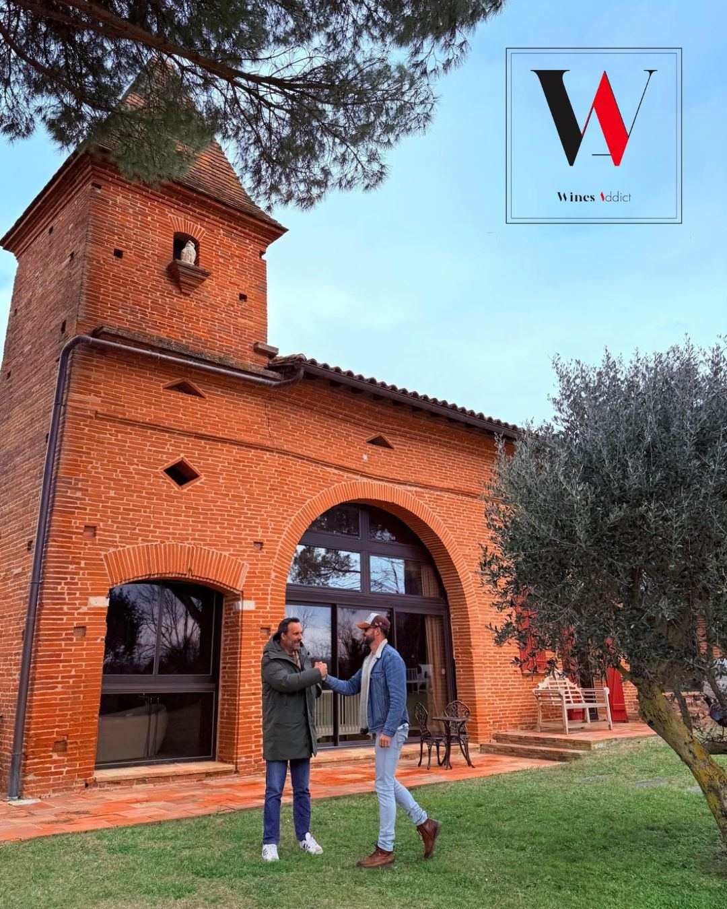
Wines Addict
Pour les champagnes et les vins, la Bastide a choisi Wines Addict.
Spécialiste du sur-mesure, Wines Addict s'adapte aux envies de chacun et met en lumière le travail passionné de petits vignerons. Loin des standards, la maison valorise les terroirs et les artisans engagés dans le respect de la vigne, de l'humain et de la biodiversité — des valeurs qui résonnent avec celles de la Bastide.
« Il faut aimer les gens qui font les vins pour pouvoir les vendre correctement. »
Carte des vins
| Prix TTC | Prix | −15 % |
|---|---|---|
| Champagnes | ||
| Drappier Brut Nature | 40,00 | 34,00 |
| Champagne Clandestin « Boréal »blanc de noirs | 56,00 | 47,50 |
| Champagne Clandestin « Austral »blanc de noirs | 60,00 | 51,00 |
| Pét'Nat — pour un peu de fun | ||
| Domaine Grès Vaillant « Les Bulles de la Cabane »Limoux | 16,50 | 14,00 |
| Vins blancs | ||
| Domaine Grès Vaillant « Les Chênes »Limoux, mauzac | 16,50 | 14,00 |
| Chablis Giraudon | 16,00 | 13,50 |
| Le Vin Vogueur « Du vin dans les voiles »Tunisie | 22,00 | 18,50 |
| Domaine Massilan « Mazet de Jo »Saint-Guilhem-le-Désert | 12,00 | 10,00 |
| Domaine Grès Vaillant « Les Gravettes »Limoux, sauvignon | 14,00 | 11,00 |
| Domaine Le Roc « Le Bouysselet »Fronton | 20,00 | 17,00 |
| Vins rouges | ||
| Domaine Mouthes le Bihan « L'Aimé Chai »Côtes de Duras | 11,00 | 9,50 |
| Domaine Massilan « Le Mazet de Jo »nielluccio | 12,00 | 10,00 |
| Domaine Massilan « Joseph »syrah | 18,00 | 15,50 |
| Domaine Grès Vaillant « Le Pin »Limoux, pinot noir | 16,50 | 14,00 |
| Domaine Le Roc « Don Quichotte »Fronton | 16,00 | 13,50 |
Envie d'une cuvée haut de gamme ou d'une demande spéciale ? Parlez-nous-en : nous étudierons la demande selon les possibilités d'approvisionnement et votre budget.
Commander par la conciergerie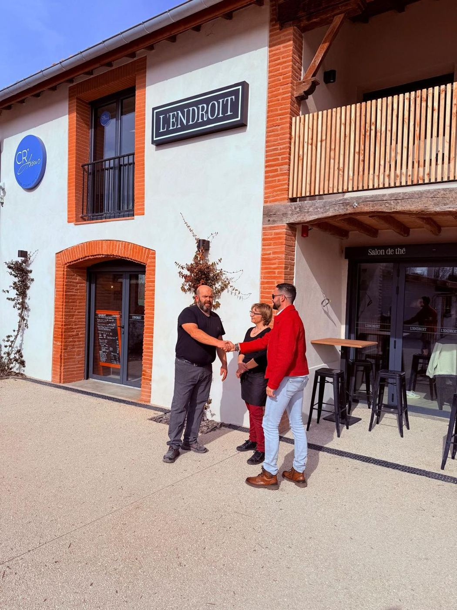
L'Endroit
Un restaurant à seulement 3 minutes de la Bastide : plats faits maison et ambiance conviviale.
- Pizzas à emporter : du mardi au vendredi, midi et soir
- Burgers maison à emporter : vendredi et samedi soir
- Restaurant, bar & grill, planches apéro
- Plat du jour renouvelé chaque midi
- Terrasse ouverte de mai à fin septembre
- Formule petit-déjeuner avec la boulangerie Les Délices de Gragnague
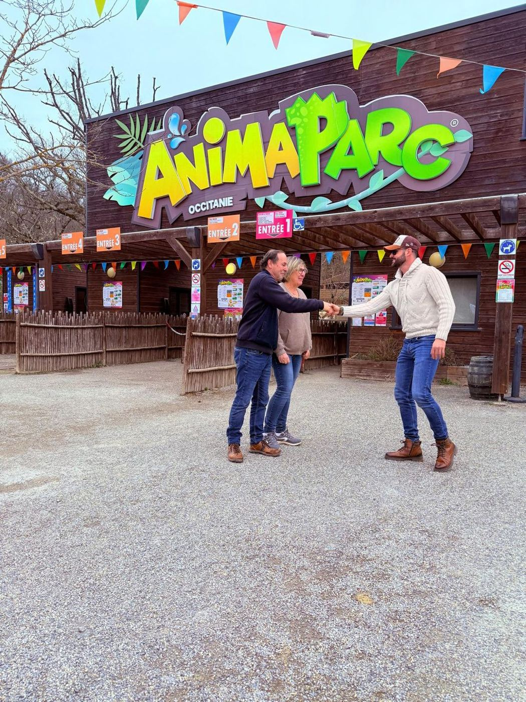
Animaparc
Une superbe aventure en famille, à 50 minutes de la Bastide.
Manèges à sensations, forêt de dinosaures grandeur nature et ferme pédagogique de plus de 150 animaux : une journée riche en découvertes pour petits et grands. À ne pas manquer : les attractions Jurassik'Vol et Condor Fury.
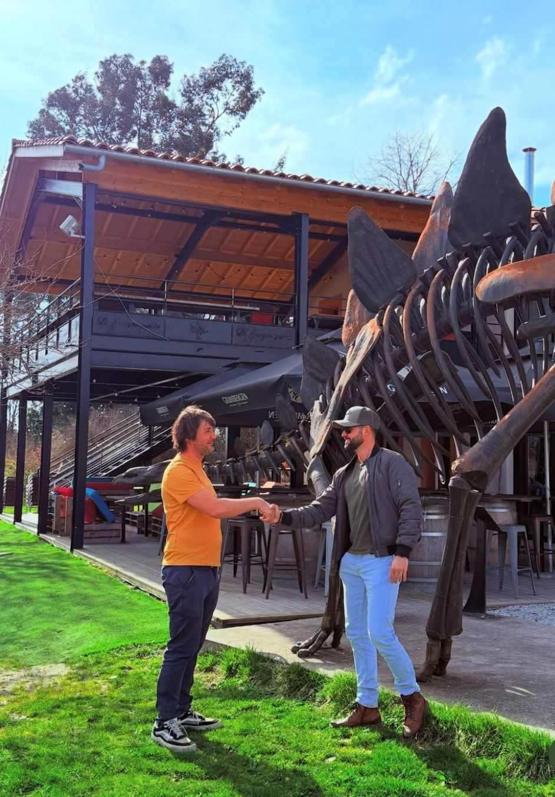
La Gragnaguette
Notre voisin incontournable : un restaurant guinguette unique, visible depuis les hauteurs de la Bastide — et qui a vue directe sur la colline où elle se niche.
- Plats faits maison, ambiance guinguette
- Restaurant, bar & grill, planches apéro
- Sculptures monumentales de dinosaures
- Basse-cour et terrain de pétanque
- Animations enfants et piscine (l'été)
Menus de groupe
Faites glisser pour voir les trois menus, touchez pour agrandir.
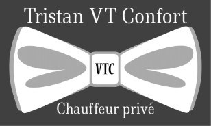
Transferts & chauffeur privé
Tristan Mbongo (VT Confort) vous conduit de l'aéroport ou de la gare jusqu'à la Bastide, et vous ramène de Toulouse après vos soirées.
Tarifs partenaires 2027
Faites glisser le tableau pour voir toutes les voitures.
| Trajet | Berline | Classe E | Classe V | Classe S |
|---|---|---|---|---|
| Depuis le centre-villejour (7h30 – 20h30) et nuit (20h30 – 7h30), même tarif | ||||
| Hôtel centre-ville → aéroport Toulouse | 45 € | 60 € | 80 € | 110 € |
| Hôtel centre-ville → gare Matabiau | 45 € | 60 € | 80 € | 110 € |
| Accueil avec pancartejour et nuit | ||||
| Aéroport Toulouse-Blagnac → hôtel centre-ville | 60 € | 60 € | 80 € | 110 € |
| Gare Matabiau → hôtel centre-ville | 60 € | 60 € | 80 € | 110 € |
| Autres prestations | ||||
| Chauffeur à disposition (par heure)sur demande au-delà de 100 km de Toulouse | 60 € | 70 € | 80 € | 110 € |
| Course minimum | 45 € | 60 € | 80 € | 110 € |
| Transport hors Toulouse | sur demande | |||
Tous les tarifs sont TTC. Pour un trajet jusqu'à la Bastide, demandez directement un prix à Tristan.
Réserver · 06 44 21 03 24 E-mail Site web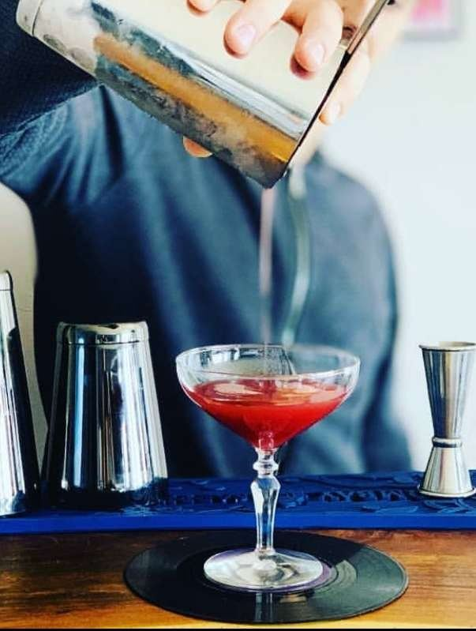
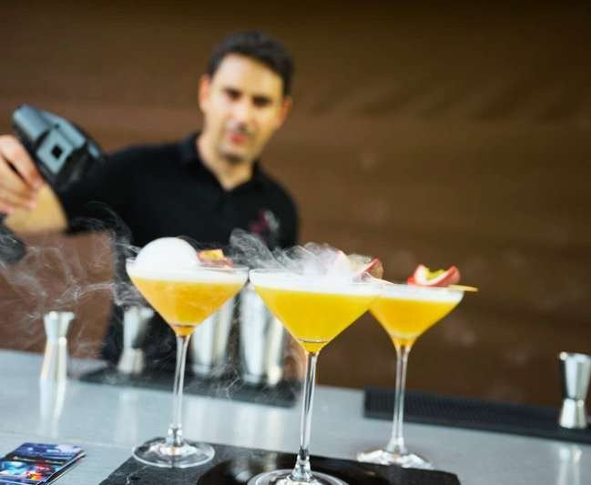
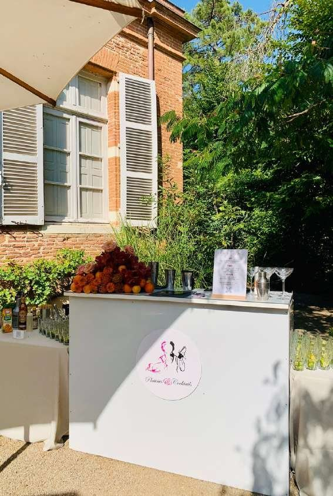
Platines & Cocktails
Depuis 2015, cette équipe toulousaine propose des bars à cocktails animés par des mixologues, des ateliers cocktails participatifs, ainsi que la sonorisation et l'éclairage de tous types d'événements. Solutions sur-mesure et clé en main, directement à la Bastide.
- Événements privés : mariage, anniversaire, baptême, EVG/EVJF, garden party…
- Événements professionnels : séminaire, team building (atelier de 12 à 40 participants, environ 2 h), soirée clients…
80 cocktails minimum · 3 cocktails ou mocktails au choix, réalisés sur place · bar mobile, barman, glaçons et verrerie. Prix dégressifs selon quantité.
12 participants minimum, environ 2 h · histoire du cocktail, ustensiles et techniques, réalisation et dégustation, défi « masterclass » en équipe.
Sonorisation complète, installation et démontage, tests techniques. Options : éclairage, fumée…
Bulle aromatisée, cocktail imprimé à votre image, flair show.
Suggestions cocktails
Les classiques
- Mojito — rhum, menthe fraîche, citron vert, Perrier, Angostura (classique ou fruit de saison)
- Mules — Moscow, London ou Caribbean : vodka, gin ou rhum, citron vert, ginger beer
- Piña colada — rhum blanc, rhum ambré, jus d'ananas, crème de coco, vanille
- Cosmopolitan — vodka, Cointreau, citron vert, cranberry
- Sex on the beach — vodka, liqueur de framboise, sirop de melon, cranberry, ananas
- Caipirinha — cachaça, citron vert, sucre blanc (classique ou fruit de saison)
- Margarita — tequila, triple sec, jus de citron (classique ou fruit de saison)
- Punch maison — rhums blanc et ambré, mangue, ananas, goyave, citron vert, cannelle, vanille
- Mai tai — rhums blanc et ambré, Cointreau, citron vert, sirop d'orgeat
- Spritz — Aperol, St-Germain ou Campari, eau gazeuse, orange, prosecco
- Basil smash — gin, basilic frais, citron jaune, sucre de canne
- Old fashioned — whisky, zeste d'orange, sucre, bitter
Automne – hiver
- Caribbean — rhum ambré, liqueur de passion, ananas, citron vert, falernum
- Verger — vodka, liqueur de sureau, sirop de poire, jus de pomme, yuzu
- Le Voyageur — gin, liqueur de pamplemousse, poivre de timut, orange sanguine, vanille
- La Vie en rose — gin, Soho, citron jaune, sirop d'hibiscus, limonade à la rose
- P'tit mousse — tequila, Lillet blanc, pamplemousse, sirop de romarin, blanc d'œuf
- Cosmotolosan — vodka, Cointreau, sirop de violette, cranberry, citron vert
- Hurricane — rhums ambré et blanc, passion, orange, citron vert, grenadine
- Agrumiska — vodka, Soho, orange, mandarine, sirop de fraise, tonic
- Queensland style — rhums blanc et ambré, litchi, crème de coco, macadamia
- Flock o'clock — armagnac, floc rouge, grenade, citron vert, hibiscus
- Wapplesky — whisky écossais, pomme, miel, vanille, bitter orange
- Point Germain — gin, liqueur de fleur de sureau, cranberry, citron vert
Watts Elle's
Chanteuse solo · Haute-Garonne, Gers & environs« Donner une âme musicale à vos événements, créer des émotions partagées et accompagner vos plus beaux souvenirs avec élégance. »
| Cérémonie (laïque et/ou religieuse)Accompagnement vocal des temps forts : entrée, vœux, alliances, signatures, sortie. | dès 230 € |
| Vin d'honneurUne ambiance chaleureuse et raffinée pour rythmer votre cocktail. | dès 350 € |
| Cocktail & loungeAnimation douce et feutrée (jazz, pop acoustique, soul) pour réceptions et dîners. | dès 300 € |
| Soirée festive & concertPop, variété et tubes pour faire danser vos invités. | dès 300 € |
| Formule sur-mesureCombinaison de moments (ex. cérémonie + vin d'honneur) ou demande spécifique. | sur devis |
Inclus : sonorisation et éclairage autonomes (jusqu'à 150 personnes, une simple prise suffit). 1 à 2 titres « coup de cœur » hors répertoire possibles.
Déplacements : inclus dans le secteur proche, puis 0,45 €/km. Structure associative : factures officielles, TVA non applicable.
Devis gratuit · 06 64 41 18 42 E-mail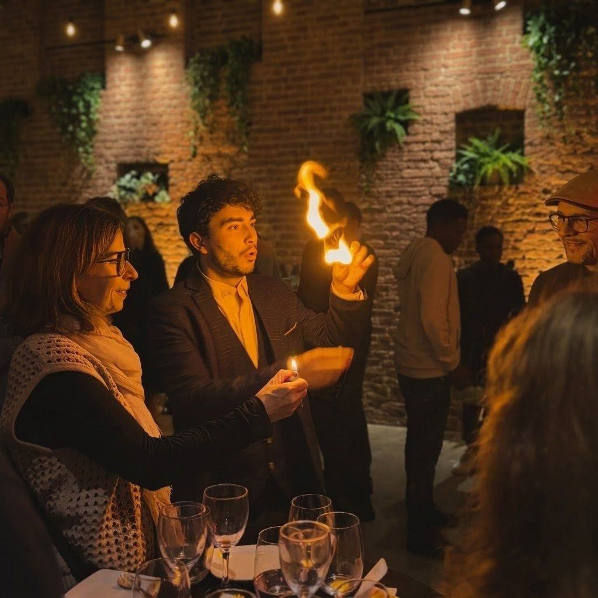
Théo Lemaire
Magicien & mentaliste · ToulouseUne magie moderne et raffinée, sans vulgarité, qui brise la glace entre les invités, comble les temps morts et marque toutes les générations.
| Animation | Durée | Tarif |
|---|---|---|
| Close-up cocktail / vin d'honneurmagie de proximité en déambulation | 1h à 1h30 | 450 € |
| Spectacle enfantsshow visuel et interactif pendant le cocktail | 45 min | 400 € |
| De table en tableentre les plats, pendant le repas | le repas | 500 € |
| Mini-spectacle « transition danse »entre le plat et le dessert | 10 à 20 min | 300 € |
Animations combinables, tours personnalisés possibles avec les témoins. Déplacement inclus dans Toulouse et sa première couronne, sur devis au-delà. En haute saison, réservez 6 à 12 mois à l'avance.
Réserver · 06 46 38 80 91 E-mail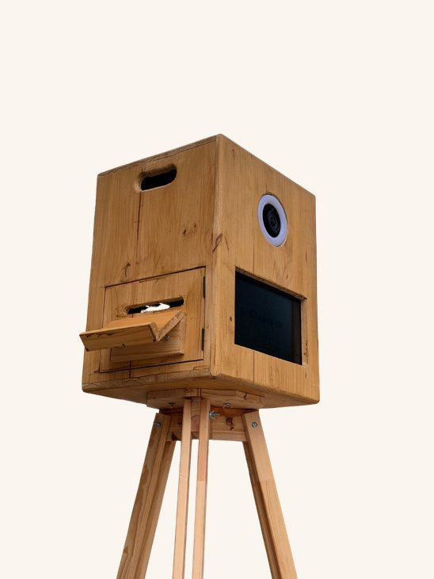
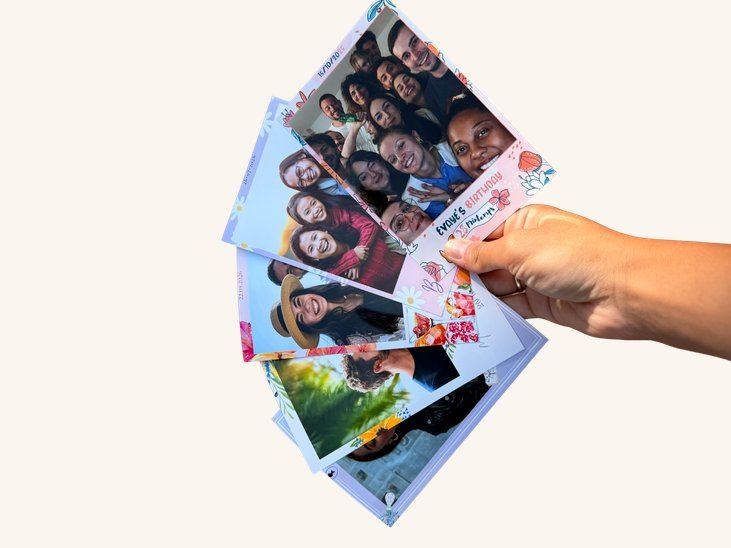
Sourires & Souvenirs
Location de photobooth en bois fait maison, par une jeune entreprise toulousaine.
Un vrai appareil Canon et une imprimante professionnelle : des photos de qualité studio, imprimées sur place. Mariages, anniversaires, baptêmes ou soirées d'entreprise.
Les formules
moins de 40 invités
40 à 70 invités
plus de 70 invités
Inclus
- Design et format personnalisés
- Livraison et installation
- Accessoires (lunettes, chapeaux…)
- Impressions instantanées
- Téléchargement numérique illimité et galerie en ligne
Utiles
Numéros d'urgence
- Verfeil : Dr Christian Prévot — 05 62 22 83 91, et pharmacie
- Montastruc : pharmacie et cabinet médical, 78 av. du Général-Castelnau — 05 61 84 21 87
- Hôpital le plus proche : L'Union
- Lavaur (81) : mercredi matin
- Verfeil ou Montastruc : dimanche matin
- Bessières : lundi matin
- Gragnague
- Verfeil
- Montastruc
- E.Leclerc — Rouffiac-Tolosan
- Intermarché — Verfeil
- Intermarché et Lidl — Garidech
- Super U — Bessières
Partir
Merci de suivre ces quelques étapes pour laisser la Bastide en bon état. Départ au plus tard à 11h. Vous pouvez cocher au fur et à mesure.
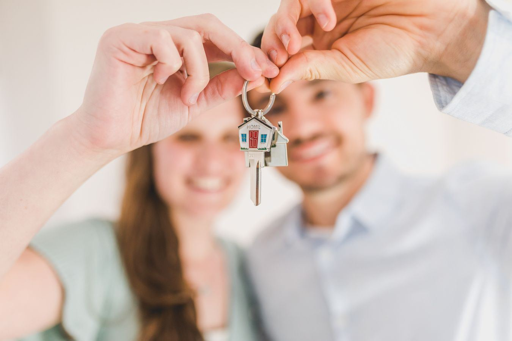
Merci !
Merci d'avoir choisi la Bastide du Bonrepos. Nous espérons que vous y avez passé un excellent moment.
Notre porte vous sera toujours ouverte : nous serions ravis de vous accueillir à nouveau. Nous vous souhaitons un bon retour chez vous.